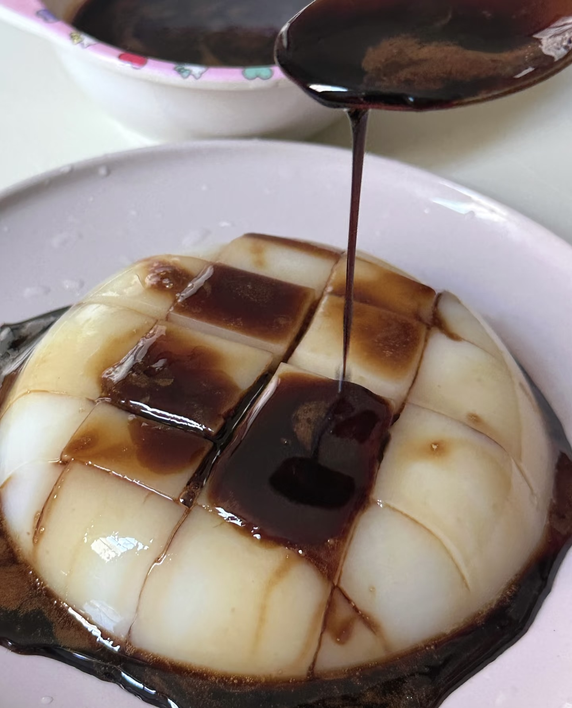

Chengdu Tours

Chengdu: Local Alley, Museum, Handcraft & Night Market Tour
Dive into Chengdu’s living culture with a full-day walk through museums, hidden alleys, fan-painting workshops, old neighborhoods, and night markets—where tradition meets local life & creativity.
Price:From £160 per person
Book Now

Chengdu: No Chili, No Problem, Non-Spicy Foodie Adventure
Chengdu is known for spicy food, but there’s also a delicious non-spicy side! Try Bao buns, Bean Soup Rice, Ice Jelly, and more on our Non-Spicy Food Tour. Join to taste Chengdu without the heat!
Price:From £115 per person
Book Now